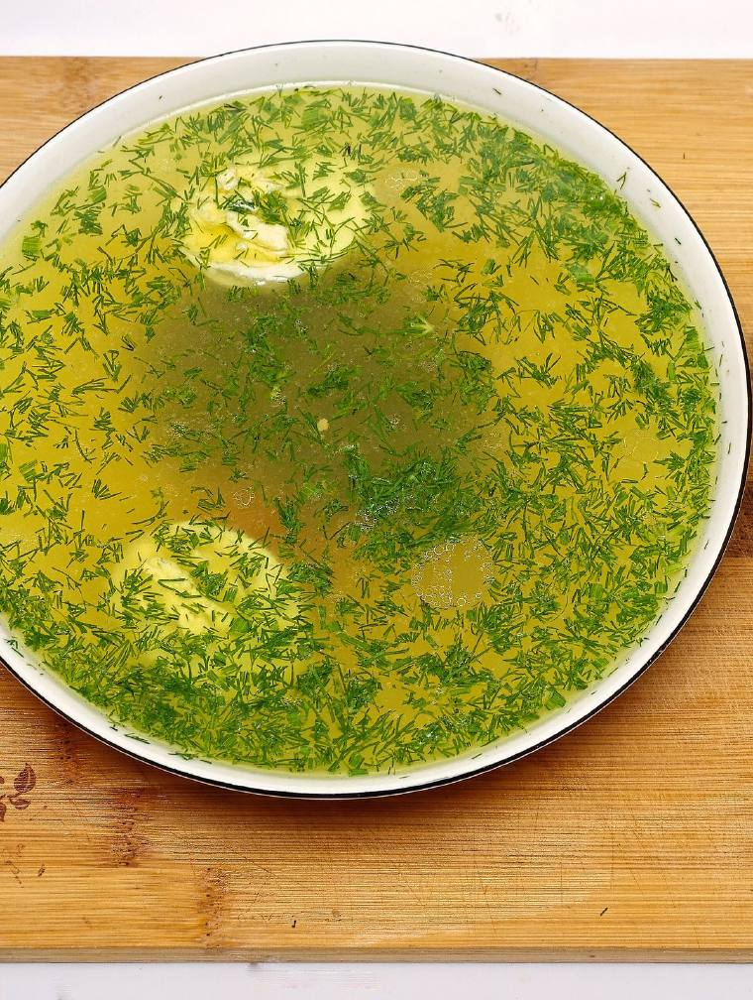

Traiteur en bocaux

Traiteur en bocaux
Poulet en bocaux
Préparation : 45 min
Cuisson : 45 min
Ingrédients (pour 1 kg de viande)
- 1 kg de poulet sans os, dégraissé
- bouillon, pour couvrir
Quantités adaptées. Les temps de cuisson ne sont pas recalculés.
- Couper le poulet en gros morceaux et le couvrir de bouillon.
- Porter à ébullition puis laisser frémir 30 à 45 minutes, jusqu’à 74 °C au moins au centre du plus gros morceau.
- Refroidir dans un plat peu profond posé dans de l’eau glacée, jusqu’à 10 °C en moins de 2 heures.
- Répartir froid dans des bocaux propres et froids, en laissant 3 cm libres. Fermer, dater, mettre aussitôt au froid.
À conserver au froid, jamais au placard
Au réfrigérateur entre 0 et 4 °C : 3 jours au plus. Au congélateur à −18 °C, dès le refroidissement : 3 mois au plus. Décongeler au réfrigérateur, consommer dans les 24 heures après avoir porté à ébullition.
Les règles des bocaux
AstuceLe jour du repas, finir en basquaise, en vol-au-vent ou à la crème.
D’après le Complete Guide to Home Canning de l’USDA, guide 5, 2015. Base de recette seulement : mise en conserve retirée, cuisson complète et conservation au froid ajoutées.